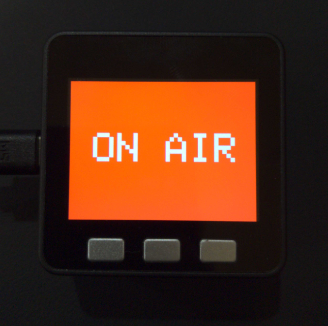

レシピ難易度：★☆☆☆☆
家族に事前に予定を伝え忘れたりしても、なるべく簡単に、すばやく「今は会議中である」ということが仕事部屋の外に掲出でき、それを見たら子供でもはっきりと「今は入ってはいけない」とわかるようにするデバイスを M5Stack で作ります。

このレシピの見どころ by Max
おもしろいよ！M5Stack の良さが抜群に出てるよ！なんか「なかのひと」が書くよ！
本レシピを行うのに必要な時間、概算費用
本レシピは以下の通りです。(ソラコムでやってみた時の数字です、的な)
- 必要な時間: 約1時間
- 概算費用: 約11,100円
※ 概算費用: ハードウェアや SORACOM を始めとした各種サービスの概ねの費用 (税や送料などの付帯費用や無料枠適用は考慮しないものとしています)
公開のレシピ
本レシピは SORACOM ユーザーによるレシピです。
「M5stack で作る ON AIR サインで手に入れる平穏な在宅勤務環境」をご覧ください。